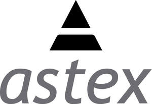

Trade Mark Journal No.2025/009 28 February 2025
UK00004163301 20 February 2025 (9,42,44)

- Class 9
- Computer software for use in relation to drug discovery; computer software for use in relation to biotechnology research; computer software for use in relation to scientific analysis; computer software using artificial intelligence, machine learning, deep learning, and reinforcement learning for use in drug discovery, biotechnology research and scientific analysis; computer software applications for use in designing and developing artificial intelligence, information technology, deep learning, machine learning, and reinforcement learning for use in drug discovery, biotechnology research and scientific analysis; computer programs and algorithms for use in manipulating received or inputted data generated in a virtual space for use in connection with artificial intelligence methods, natural language processing, natural language understanding, natural language human-machine interfaces and predictive assistance technologies; recorded computer programs using artificial intelligence, machine learning, deep learning, and reinforcement learning for use in software development in the field of drug discovery, biotechnology research and scientific analysis.
- Class 42
- Drug discovery and development services; biotechnology research; scientific analysis; providing scientific information in the field of pharmaceuticals and clinical trials; pharmaceutical research services.
- Class 44
- Providing health care information via telephone and the internet; providing information in the field of the diagnostic, prophylactic, and therapeutic properties of pharmaceuticals.
Astex Therapeutics Limited
Representative: Mishcon de Reya LLP